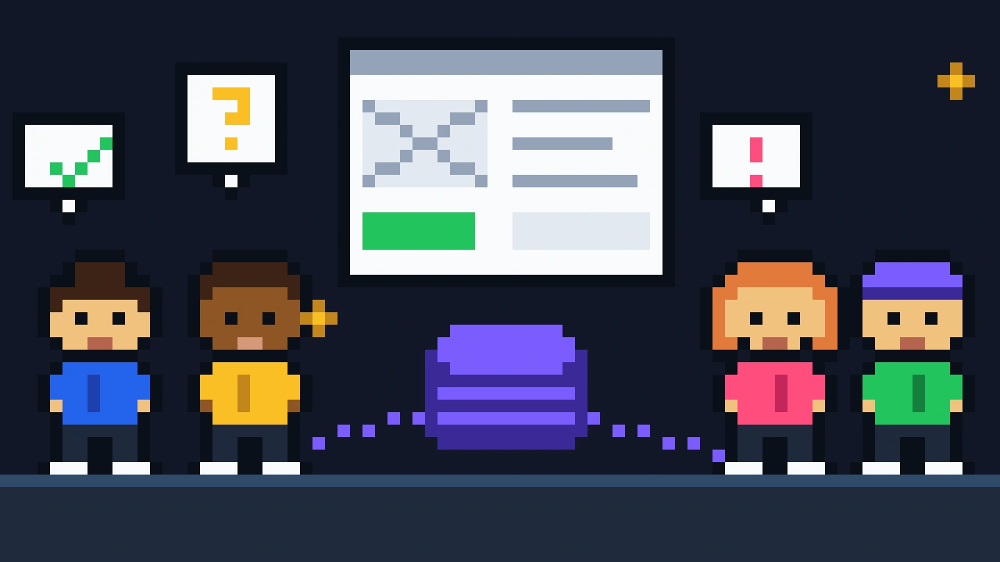
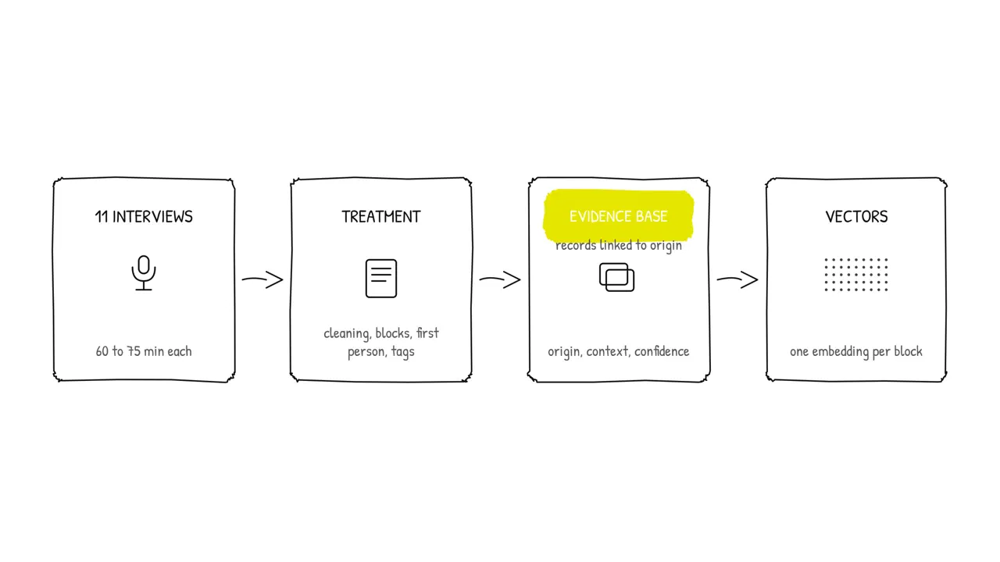
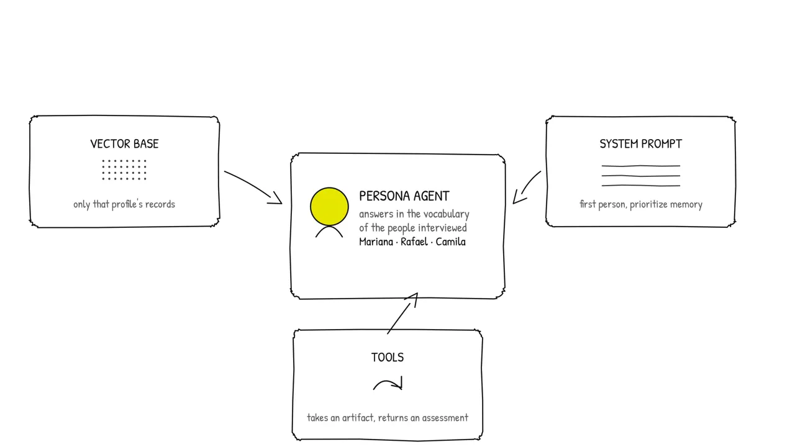
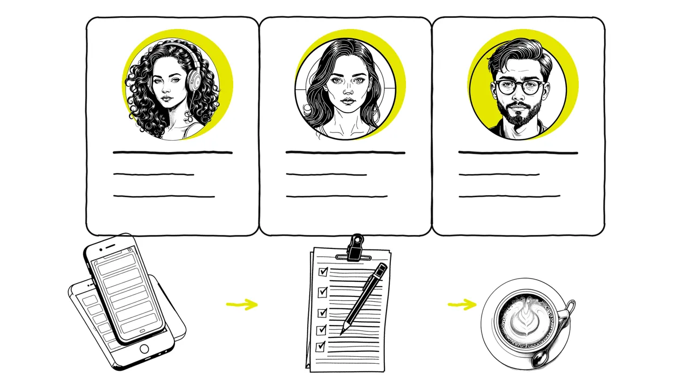

Synthetic Personas
Eleven in-depth interviews became AI agents that represent the personas and validate features, journeys and screens without reaching out to users again.

Beyond the prompt
Prompting handles isolated tasks, not process. When a problem depends on accumulated context, asking again does not scale.
So I treated the persona as a system: raw data, structured memory, a query tool and a behavior contract that defines how it thinks and speaks.
The method
Each 60 to 75 minute interview was cleaned, split into granular blocks, rewritten in the first person, tagged (pain point, mental model, tools, goal) and stored as JSON linked to its source. Never summarized away.

Three archetypes emerged: Mariana, the organized candidate; Rafael, the disorganized beginner; Camila, the persistent tightrope walker. Each one became an agent with its own vector base, a personality contract and tools to review product artifacts.

Limits

A synthetic persona only answers from what is already in the data. Outputs are checked against the transcripts, and archetypes test hypotheses. They never replace talking to real people in high-stakes decisions.